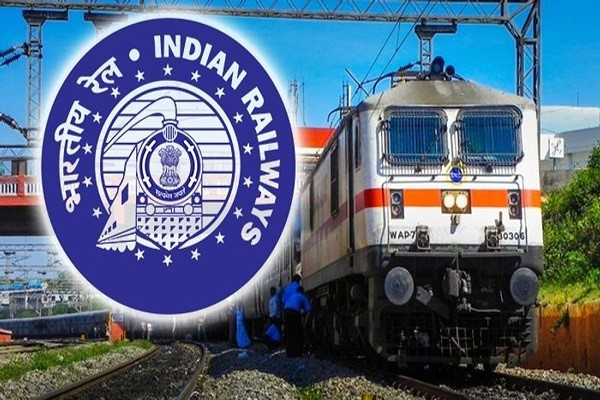

Public Transport in India consists of transport by land, water and air. Road transport is the primary mode of transport for most Indian citizens, and India's road transport systems are among the most heavily used in the world.
Horses were domesticated circa 3500 BCE. Prior to that oxen were used. Historically a wide variety of arrangements of horses and vehicles have been used, from chariot racing, which involved a small vehicle and four horses abreast, to horsecars or trollies, which used two horses to pull a car that was used in cities before electric trams were developed. A two-wheeled horse-drawn vehicle is a cart (see various types below, both for carrying people and for goods). Four-wheeled vehicles have many names – one for heavy loads is most commonly called a wagon. Very light carts and wagons can also be pulled by donkeys (much smaller than horses), ponies or mules. Other smaller animals are occasionally used, such as large dogs, llamas and goats (see draught animals). Heavy wagons, carts and agricultural implements can also be pulled by other large draught animals such as oxen, water buffalo, yaks or even camels and elephants.
Horses were domesticated circa 3500 BCE. Prior to that oxen were used. Historically a wide variety of arrangements of horses and vehicles have been used, from chariot racing, which involved a small vehicle and four horses abreast, to horsecars or trollies, which used two horses to pull a car that was used in cities before electric trams were developed.
A two-wheeled horse-drawn vehicle is a cart (see various types below, both for carrying people and for goods). Four-wheeled vehicles have many names – one for heavy loads is most commonly called a wagon. Very light carts and wagons can also be pulled by donkeys (much smaller than horses), ponies or mules. Other smaller animals are occasionally used, such as large dogs, llamas and goats (see draught animals). Heavy wagons, carts and agricultural implements can also be pulled by other large draught animals such as oxen, water buffalo, yaks or even camels and elephants.
Vehicles pulled by one animal (or by animals in a single file) have two shafts which attach either side of the rearmost animal (the wheel animal or wheeler). Two animals in single file are referred to as a tandem arrangement, and three as a randem. Vehicles which are pulled by a pair (or by a team of several pairs) have a pole which attaches between the wheel pair. Other arrangements are also possible, for example, three or more abreast (a troika), a wheel pair with a single lead animal (a "unicorn"), or a wheel pair with three lead animals abreast (a "pickaxe"). Very heavy loads sometimes had an additional team behind to slow the vehicle down steep hills. Sometimes at a steep hill with frequent traffic, such a team would be hired to passing wagons to help them up or down the hill. Horse-drawn carriages have been in use for at least 3,500 years.
Bullock carts have been traditionally used for transport, especially in rural India. The arrival of the British saw drastic improvements in the horse carriages which were used for transport since early days. Today, they are used in smaller towns and are referred as tanga or buggies. Victorias of Mumbai, which were used for tourist purposes, are now banned and plans are afloat to replace it with Victoria-styled electric carriages. Horse carriages are now rarely found in the cities of India baring tourist areas and hill stations. In recent years cities have banned the movement of slow moving vehicles on the main roads.Used especially for carrying goods, the bullock cart is pulled by one or several oxen. The cart is attached to an ox team by a special chain attached to yokes, but a rope may also be used for one or two animals. The driver and any other passengers sit on the front of the cart, while load is placed in the back. Traditionally, the cargo was usually agrarian goods and lumber.
Bullock carts were widely used in Malaysia before the introduction of automobiles, and many are still used today. These included passenger vehicles, now used especially for tourists. Passenger carts are usually equipped with awnings for protection against sun and rain, and are often gaily decorated.Bullock carts were widely used in Malaysia before the introduction of automobiles, and many are still used today. These included passenger vehicles, now used especially for tourists.Passenger carts are usually equipped with awnings for protection against sun and rain, and are often gaily decorated.Bullock carts, called dalguji there, is still extensively used in North Korea because of fuel shortages. It is perhaps the last country where it is used for everyday transportation, both in agriculture and in military. ox-wagon or bullock wagon is a four-wheeled vehicle pulled by oxen (draught cattle). It was a traditional form of transport, especially in Southern Africa but also in New Zealand and Australia. Ox-wagons were also used in the United States. The first recorded use of an ox-wagon was around 1670,but they continue to be used in some areas up to modern times.ullock wagons were important in the colonial history of Australia. Bullocks were preferred by many explorers and teamsters because they were cheaper, quieter, tougher and more easily maintained than horses therefore making them more popular for draught work.The ox-wagon could also be disassembled in five minutes by hitting out four pegs on the wheels, then lifting the top of the wagon in seven pieces and carried by four people over rough terrain or across rivers. The ox-wagon could also twist 40 degrees which made it ideal for traversing difficult surface areas. The wheels of the ox-wagon were painted in red lead paint which acted as an excellent water repellant. Various flower and ornament designs were also painted on the wagons and the chests the wagons carried, making them look very colourful.
Regular intercity bus services by steam-powered buses were pioneered in England in the 1830s by Walter Hancock and by associates of Sir Goldsworthy Gurney, among others, running reliable services over road conditions which were too hazardous for horse-drawn transportation.
The first mechanically propelled omnibus appeared on the streets of London on 22 April 1833. Steam carriages were much less likely to overturn, they travelled faster than horse-drawn carriages, they were much cheaper to run, and caused much less damage to the road surface due to their wide tyres.
However, the heavy road tolls imposed by the turnpike trusts discouraged steam road vehicles and left the way clear for the horse bus companies, and from 1861 onwards, harsh legislation virtually eliminated mechanically propelled vehicles from the roads of Great Britain for 30 years, the Locomotive Act of that year imposing restrictive speed limits on "road locomotives" of 5 mph (8.0 km/h) in towns and cities, and 10 mph (16 km/h) in the country.
In parallel to the development of the bus was the invention of the electric trolleybus, typically fed through trolley poles by overhead wires. The Siemens brothers, William in England and Ernst Werner in Germany, collaborated on the development of the trolleybus concept. Sir William first proposed the idea in an article to the Journal of the Society of Arts in 1881 as an "...arrangement by which an ordinary omnibus...would have a suspender thrown at intervals from one side of the street to the other, and two wires hanging from these suspenders; allowing contact rollers to run on these two wires, the current could be conveyed to the tram-car, and back again to the dynamo machine at the station, without the necessity of running upon rails at all. The first such vehicle, the Electromote, was made by his brother Dr. Ernst Werner von Siemens and presented to the public in 1882 in Halensee, Germany. Although this experimental vehicle fulfilled all the technical criteria of a typical trolleybus, it was dismantled in the same year after the demonstration. Max Schiemann opened a passenger- carrying trolleybus in 1901 near Dresden, in Germany. Although this system operated only until 1904, Schiemann had developed what is now the standard trolleybus current collection system. In the early days, a few other methods of current collection were used. Leeds and Bradford became the first cities to put trolleybuses into service in Great Britain on 20 June 1911.
Most cities offer auto rickshaw service, although cycle rickshaws are also common and even hand-pulled rickshaws exist in certain areas such as Kolkata. Many state governments have launched an initiative of women friendly rickshaw service called the Pink Rickshaws driven by women. The drivers are known as the Autokaarar, auto-wallah or tuktuk-wallah. Auto rickshaws are used in cities and towns for short distances; they are less suited to long distances because they are slow and the carriages are open to air pollution. Auto rickshaws (often called "autos") provide cheap and efficient transportation. Modern auto rickshaws run on electicity as government pushes for e-mobility through its FAME-II scheme, compressed natural gas (CNG) and liquified petroleum gas (LPG) due to government regulations and are environmentally friendly compared to full-sized cars. To augment speedy movement of traffic, auto rickshaws are not allowed in the southern part of Mumbai. India is the location of the annual Rickshaw Run.
There are two types of auto rickshaws in India. In older versions the engines were below the driver's seat, while in newer versions engines are in the rear. They normally run on petrol, CNG, or diesel. The seating capacity of a normal rickshaw is four, including the driver's seat. Six-seater rickshaws exist in different parts of the country, but the model was officially banned in the city of Pune on 10 January 2003 by the Regional Transport Authority (RTA). Apart from this, modern electric auto rickshaws which runs on electric motor have high torque and loading capacity with better speed is also gaining popularity in India. Many auto drivers moved to electric three wheeler as the prices of CNG or Diesel is very high and that type of auto rickshaws are much costlier compared to the electric auto rickshaw. Government is also taking actions to convert current CNG and Diesel rickshaws to Electric Rickshaws.
CNG autos in many cities (e.g. Delhi, Agra) are distinguishable from the earlier petrol-powered autos by a green and yellow livery, as opposed to the earlier black and yellow appearance. In other cities (such as Mumbai) the only distinguishing feature is the 'CNG' print found on the back or side of the auto. Some local governments are considering four-stroke engines instead of two-stroke versions. Auto rickshaw manufacturers in India include Bajaj Auto, Atul Auto Limited, Oculus Auto, Kerala Automobiles Limited, Force Motors, Mahindra & Mahindra, Piaggio Ape, TVS Motors and Fleek Motors.
In Delhi there also used to be a variant powered by a Harley-Davidson engine called the phat-phati, because of the sound it made. The story goes that shortly after Independence a stock of Harley-Davidson motorbikes were found that had been used by British troops during World War II and left behind in a military storage house in Delhi. Some enterprising drivers purchased these bikes, added on a gear box (probably from a Willys jeep), welded on a passenger compartment that was good for four to six passengers, and put the unconventional vehicles onto the roads. A 1998 ruling of the Supreme Court against the use of polluting vehicles finally signed the death warrant of Delhi's phat-phatis. As of 2018 India has about 1.5 million battery-powered, three-wheeled rickshaws on its roads. Some 11,000 new ones hit the streets each month, creating a US$1.5 billion market. Manufacturers include Mahindra & Mahindra Ltd. and Kinetic Engineering. A hindrance to adoption to electric vehicles is the paucity of charging stations; India had only 425 at year-end 2017. By 2022 the number is projected to rise to 2,800.
The first railway proposals for India were made in Madras in 1832. The country's first transport train, Red Hill Railway (built by Arthur Cotton to transport granite for road-building), ran from Red Hills to the Chintadripet bridge in Madras in 1836-1837. In 1845, the Godavari Dam Construction Railway was built by Cotton at Dowleswaram in Rajahmundry, to supply stone for the construction of a dam over the Godavari River. In 1851, the Solani Aqueduct Railway was built by Proby Cautley in Roorkee to transport construction materials for an aqueduct over the Solani River. These railway tracks were dismantled after these projects were completed and no longer exist.
India's first passenger train, operated by the Great Indian Peninsula Railway and hauled by three steam locomotives (Sahib, Sindh and Sultan), ran for 34 kilometres (21 mi) with 400 people in 14 carriages on 1,676 mm (5 ft 6 in) broad gauge track between Bori Bunder (Mumbai) and Thane on 16 April 1853. The Thane viaducts, India's first railway bridges, were built over the Thane creek when the Mumbai-Thane line was extended to Kalyan in May 1854. Eastern India's first passenger train ran 39 km (24 mi) from Howrah, near Kolkata, to Hoogly on 15 August 1854. The first passenger train in South India ran 97 km (60 mi) from Royapuram-Veyasarapady (Madras) to Wallajaroad (Arcot) on 1 July 1856.
On 24 February 1873, a horse-drawn 3.8 km (2.4 mi) tram opened in Calcutta between Sealdah and Armenian Ghat Street. On 9 May 1874, a horse-drawn tramway began operation in Bombay between Colaba and Parel. In 1879, the Nizam's Guaranteed State Railway was established which built several railway lines across the then Hyderabad State with Kachiguda Railway Station serving as its headquarters. In 1897, lighting in passenger coaches was introduced by many railway companies. On 3 February 1925, the first electric passenger train in India ran between Victoria Terminus and Kurla.
Budget was usually presented two days before the Union budget every year till 2016. The central government approved merger of the Rail and General budgets from next year, ending a 92-year-old practice of a separate budget for the nation's largest transporter.
On 31 March 2017, Indian Railways announced that the country's entire rail network would be electrified by 2022 or 2023, and become a net-zero (carbon emission) railway by 2030.On 22 March 2020, Indian Railways announced a nationwide shutdown of passenger rail service to combat the COVID-19 pandemic in India. This became part of a nationwide lockdown to slow the spread of the novel coronavirus. The railway shutdown was initially scheduled to last from 23 to 31 March, but the nationwide lockdown, as announced by Prime Minister Narendra Modi on 24 March, was to last 21 days. The national rail network is maintaining its freight operations during the lockdown, to transport essential goods. On 29 March, Indian Railways announced that it would start service for special parcel trains to transport essential goods, in addition to regular freight service. The national rail operator has also announced plans to convert coaches into isolation wards for patients of COVID-19.
Until the late 1980s, Indian Railways ticket reservations were made manually. In late 1987, IR began using a computerized ticketing system. The system went online in 1995 to provide current information on status and availability. The ticketing network at stations is computerized with the exception of remote areas. IR now provides multiple channels for passengers to book tickets between any two train stations in the country. Confirmed reservation tickets will show the passenger and fare details along with berth or seat number(s) allocated to them on the ticket. If the reservation is not available on a particular train, the ticket has a wait- list number. A person with a wait-listed ticket must wait for enough cancellations to obtain a confirmed ticket. If their ticket is not confirmed on the day of departure, they cannot board the train.